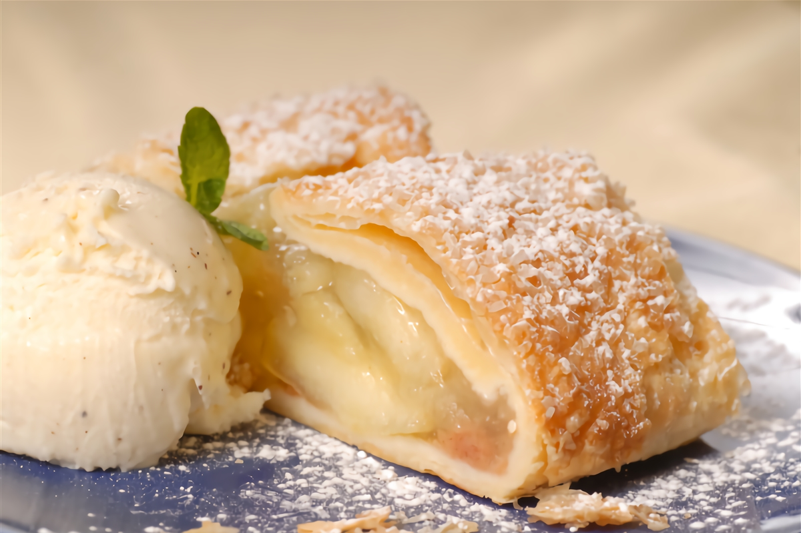
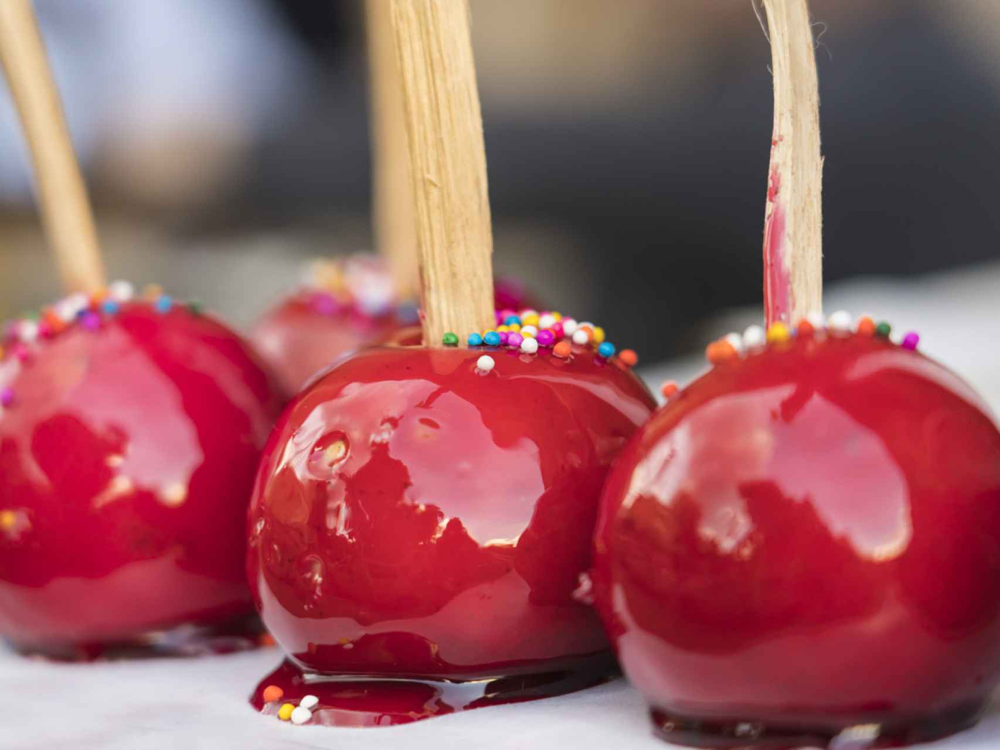
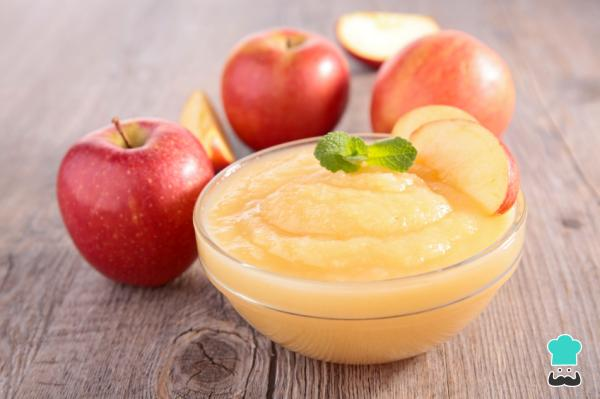

Strudel de manzanas
El Apfelstrudel o strudel de manzana es un postre típico tradicional de la cocina austriaca y del sur de Alemania, cuyos orígenes podrían remontarse a antiguas recetas de las cocinas bizantina, armenia o turca.
Ver receta completa

Manzanas de caramelo
Las manzanas caramelizadas o manzanas confitadas son las manzanas cubiertas de una capa de azúcar de caramelo.En algunos lugares son llamadas baritas.
Ver receta completa

Compota de Manzanas
La compota de manzana es una de esas recetas caseras de toda la vida que puedes preparar rápido y disfrutar tanto de postre como entre horas.Si quieres saber cómo preparar esta receta saludable, sigue leyendo.
Ver receta completa